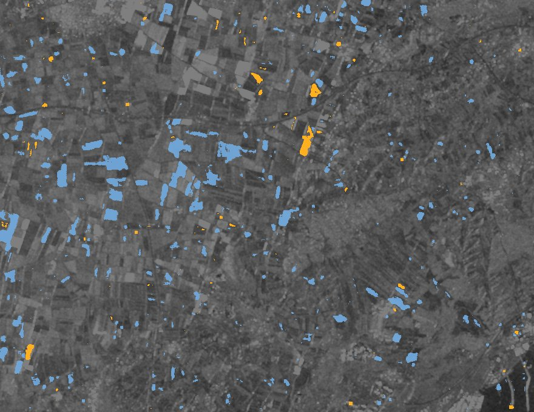

NASA Space Apps 2026 · Çukurova için
Yağmur radarı yanıltır.
Between Passes, gerçekte neyin değiştiğini gösterir.
NASA ve ISRO'nun radar uydusu NISAR, bulut ve karanlıktan etkilenmeden her 12 günde bir yeryüzünü görüntüler. Ama ıslak toprak radarda parlak, kuru toprak koyu görünür; bu yüzden değişim haritaları hava durumuyla dolar. Between Passes her değişimi NASA'nın toprak nemi ve yağış verileriyle karşılaştırır ve havanın açıklayamadığı değişimleri öne çıkarır. Bu sayfa, Ceyhan çevresinde 22 Ekim ile 3 Kasım 2026 arasında ölçtüklerimi anlatıyor.

636 tarla parselinde belirgin değişim var. Parlaklaşan alan (3.282 ha), kararan alanın (468 ha) yaklaşık 7 katı.
Değişmemesi gereken Ceyhan şehir merkezi neredeyse hiç değişmedi. Yani görülen değişim uydu hatası değil, tarlalarda.
NASA'nın optik uydu verisine (HLS) göre parlaklaşan parsellerin yalnızca %9'unda bitki örtüsü azaldı. Değişimin çoğu hasat değil.
28–29 Ekim'de yaklaşık 23 mm yağmur yağdı. NASA'nın toprak nemi uydusu SMAP, Ceyhan'da toprağın belirgin şekilde ıslandığını ölçtü (m³/m³). En güçlü açıklama: toprak ıslandı.
Önce nereye bakmalı?
Toprak ıslanırken radarda kararan 128 tarla var. Islak toprak bunu yapamaz, yani bu tarlalarda başka bir şey değişti (su birikmesi, hasat, toprak işleme gibi). En büyükten başlayarak ilk 10'u, en yakın köyle birlikte:
- Aydınlar · 1,1 km · 23,5 ha · −8,8 dB · bitki örtüsü değişmedi
- Adatepe · 3,0 km · 19,4 ha · −4,1 dB · optik görüntü yok
- Küçük Mangıt · 2,4 km · 15,8 ha · −3,2 dB · optik görüntü yok
- Hamdilli · 2,7 km · 14,4 ha · −3,2 dB · optik görüntü yok
- Köprülü · 1,4 km · 13,5 ha · −3,1 dB · optik görüntü yok
- Değirmendere · 1,8 km · 13,3 ha · −3,4 dB · bitki örtüsü değişmedi
- Mercin · 0,9 km · 13,0 ha · −4,1 dB · optik görüntü yok
- Adatepe · 3,8 km · 13,0 ha · −3,5 dB · optik görüntü yok
- Veysiye · 1,6 km · 11,2 ha · −3,5 dB · optik görüntü yok
- Hamdilli · 2,1 km · 10,6 ha · −3,7 dB · optik görüntü yok
Her satır uygulamada o tarlayı açar. Mesafe: tarlanın ortasından köyün merkezine. Optik bilgi NASA HLS (Sentinel-2) verisinden.
Sadece Ceyhan'da mı? Dünya genelinde iki kez test ettim
Testi önceden yazıp kilitledim, sonra dünyanın her yerinden 200 NISAR bölgesini rastgele seçtim. SMAP'in güvenilir ölçüm verdiği 74 bölgede sonuç açık: toprak ıslandıkça radar parladı, kurudukça karardı (Spearman ρ = 0,58, p < 0,001). Sonra aynı testi 200 yeni rastgele bölgede tekrarladım ve sonuç yine tuttu (ρ = 0,55, p < 0,001). En net sinyal kurumadır: kuruyan toprak radarda yaklaşık 1 dB karardı. Yani Ceyhan'da görülen, NISAR'ın dünyanın her yerinde gösterdiği bir fiziğin yerel hâli.
Sırada ne var? Üç geçiş kararı verecek
NISAR, Ceyhan'ın üzerinden üç farklı yörüngeden geçiyor: iki tanesi 29 Ekim (yağmurlu gün) ve 10 Kasım'da (toprak kuruduktan sonra), biri de 15 Kasım'da. SMAP, toprağın 10–11 Kasım'a kadar yeniden kuruduğunu gösteriyor. İki ihtimal var:
- Parlaklaşma ıslak topraktan geldiyse, tarlalar yeniden kararmalı.
- Sürümden (toprağın pürüzlenmesinden) geldiyse, tarlalar parlak kalmalı, çünkü pürüz kurumaz.
Üç geçişin her biri için tahminimi ve karar kurallarımı, NASA verileri yayımlamadan önce herkese açık olarak kilitledim. Veriler yayımlanınca sonuçlar uygulamada görünecek.
Çiftçi ve ziraat teknisyenleri için ne anlama gelir?
- Bulutlu havada da görür: Radar, Çukurova'nın kış aylarında bile her 12 günde bir tarlaların ıslanıp kuruduğunu izleyebilir.
- Kendi bölgenize bakın: Yukarıdaki listeye ya da uygulamadaki "Change census" tablosunun Nearest place sütununa bakın; haritada Measure a field ile tarlanızı çizip ölçebilirsiniz.
- Saha kontrolü için başlangıç noktası: Belirgin parlayan veya kararan parseller, yerinde bakılması gereken yerleri gösterebilir (su tutma, sürüm, hasat).
- Gelecekte: Ardışık NISAR geçişleriyle hangi tarlaların ne kadar hızlı kuruduğunu karşılaştırmak, sulama ve drenaj planlamasına yardımcı olabilir. Bu henüz test edilmiş bir uygulama değildir.
Neyi iddia etmiyoruz
- Tek bir tarlanın neden değiştiğini kesin olarak bilemeyiz; SMAP 9 km genişliğinde ölçer, tek tek tarlaları ayırmaz.
- Bu bir vaka çalışmasıdır, uyarı sistemi değildir. Yağış değerleri kaba bir model tahminidir.
- Ceyhan'ın toprak nemi karşılaştırması "keşif amaçlı"dır (22 Ekim'e en yakın güvenilir SMAP ölçümü 20 Ekim'dir).
Veriler: NASA-ISRO NISAR L2 GCOV VALIDATED · NASA SMAP · NASA HLS · NASA POWER · © OpenStreetMap katkıcıları. Resmî bir NASA veya ISRO ürünü değildir. Yazılım geliştirme ve metinlerde üretken yapay zekâ (Claude Code) desteği kullanılmıştır; tüm sayılar NASA verilerinden hesaplanmış ve testlerle doğrulanmıştır.